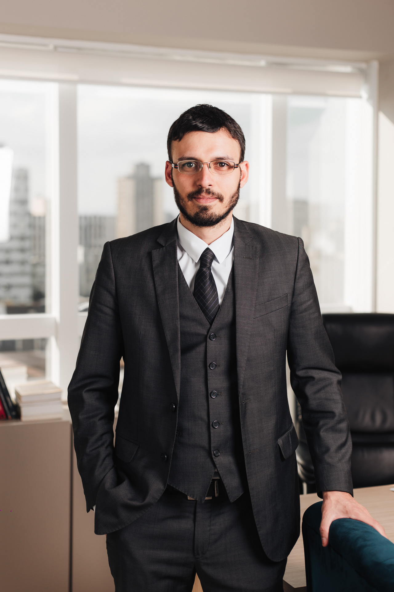
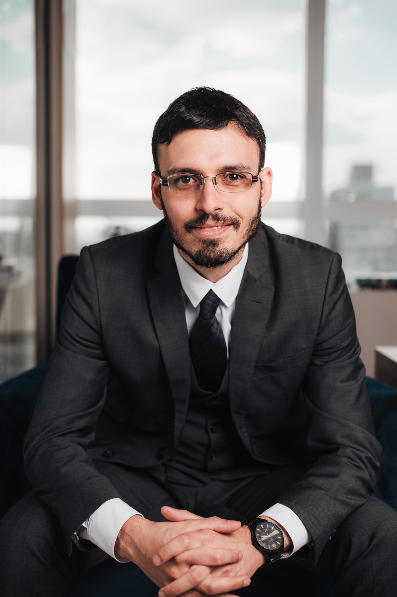
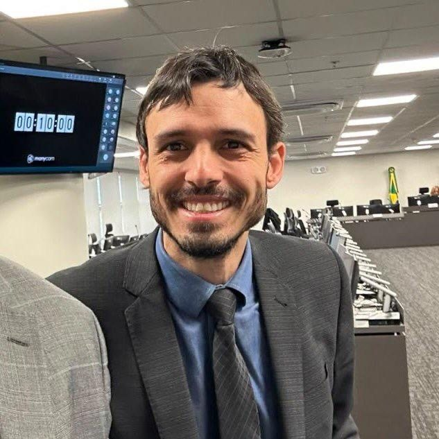
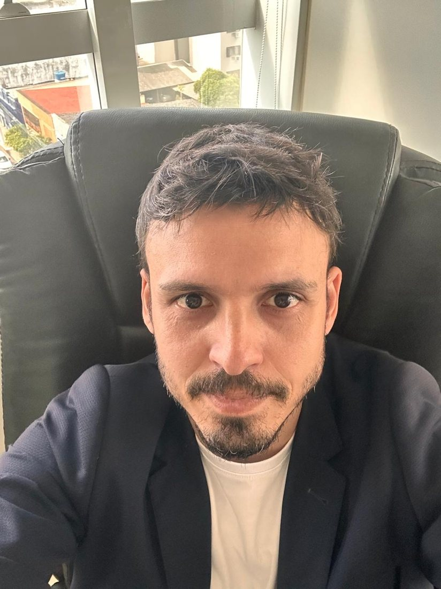
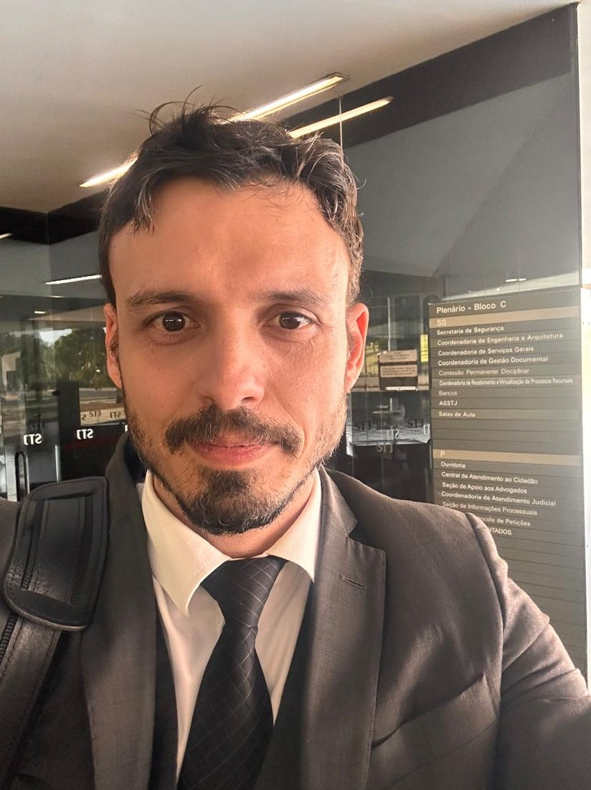
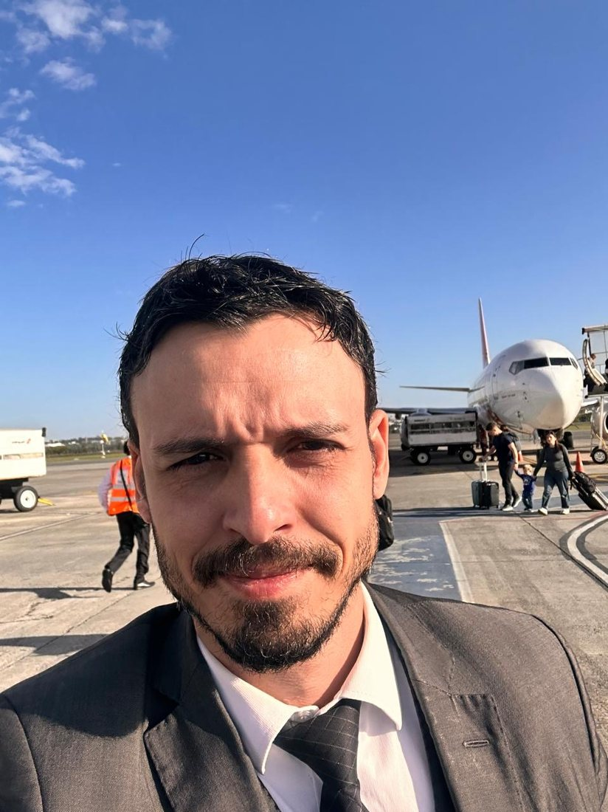
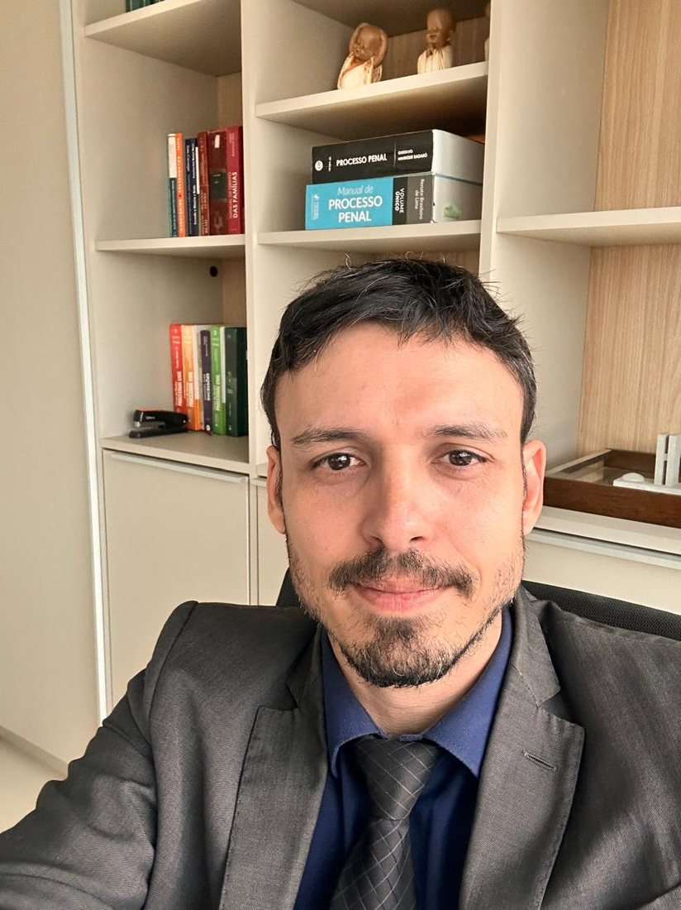
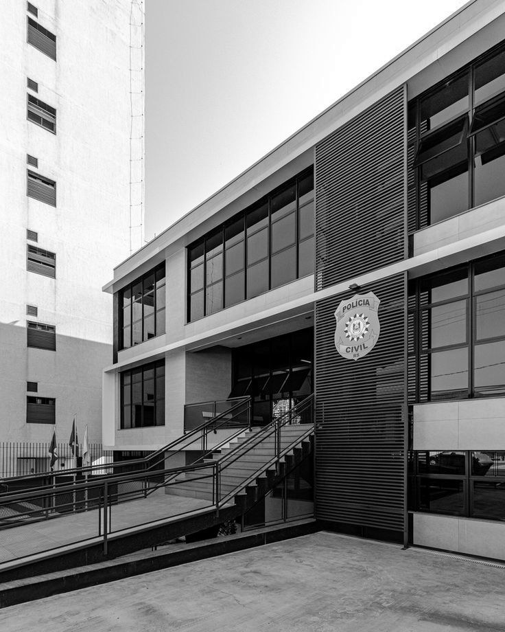
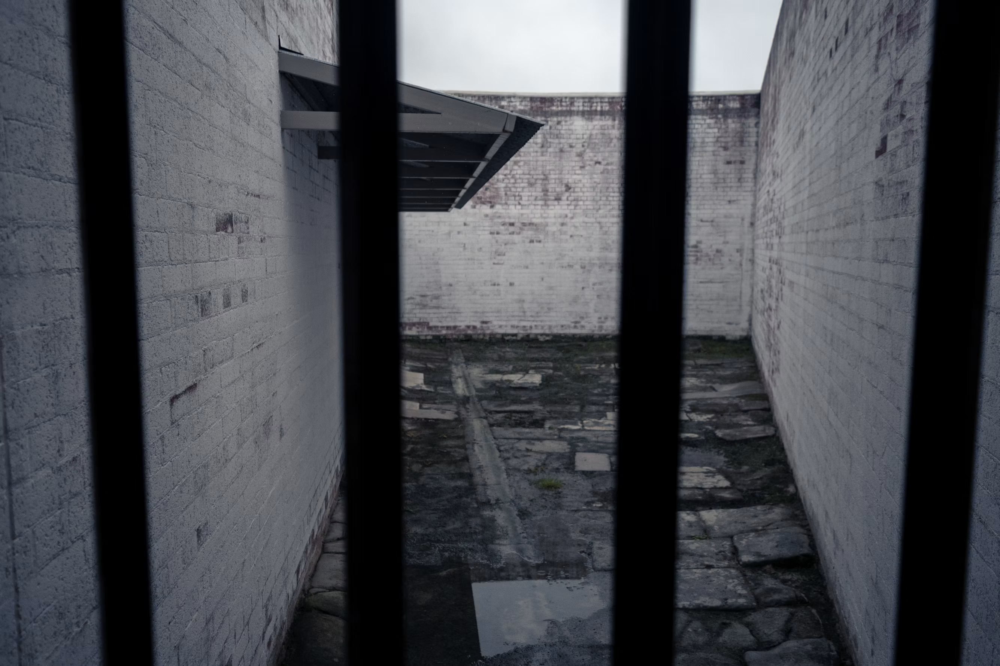

Tribunal do Júri
No Júri, a defesa se constrói muito antes do plenário.
Estudo minucioso dos autos, preparação cuidadosa das testemunhas e construção de teses sólidas para sustentar a defesa perante o Conselho de Sentença.
Saiba mais
existe uma história que precisa ser ouvida.
Há 12 anos atuando na advocacia criminal, Marcelo Scherer reúne experiência profissional, formação acadêmica no Brasil e no exterior e uma atuação comprometida com a defesa de direitos.
Mestre em Ciências Criminais pela PUCRS, com formação internacional na Espanha e na Alemanha, Marcelo Scherer reúne 12 anos de atuação criminal, experiência acadêmica e dedicação ao estudo do Direito Penal e Processual Penal.
Sua trajetória é orientada por um propósito: contribuir para uma defesa criminal qualificada e reduzir os riscos de injustiças no sistema penal.






Natural de [cidade], [um pouco sobre a história dele].
Fora dos tribunais, sou apaixonado por corrida. [detalhe: provas, rotina, o que a corrida ensina]
Escolhi o Direito Criminal porque [motivo, nas palavras dele].
Soluções sobre cada área do Direito Criminal. Toque para saber mais.
No Júri, a defesa se constrói muito antes do plenário.
Estudo minucioso dos autos, preparação cuidadosa das testemunhas e construção de teses sólidas para sustentar a defesa perante o Conselho de Sentença.
Uma acusação grave não autoriza um julgamento antecipado.
Casos que envolvem reputação, liberdade e vida pessoal exigem sigilo, serenidade e uma análise criteriosa de cada prova e circunstância.
Recebeu uma intimação? Entenda sua situação antes de falar.
Antes de prestar qualquer esclarecimento, é essencial saber em que condição você está sendo chamado, quais são os seus direitos e como funciona o procedimento.
Denúncia, medida protetiva ou investigação: cada situação pede uma resposta própria.
Atuação na defesa de acusados e na assistência às vítimas, com atenção às particularidades e aos prazos de cada procedimento.
A acusação conta uma versão. A defesa garante que ela seja posta à prova.
Um processo criminal não se resume ao que foi alegado contra você. A defesa trabalha com os fatos, as provas e os instrumentos da lei para apresentar a sua posição.
Alguém da sua família foi preso? O primeiro passo é entender o que aconteceu.
Nas primeiras horas após uma prisão, a orientação jurídica esclarece a situação para a família e avalia as medidas cabíveis em cada caso.
Uma decisão desfavorável nem sempre é o fim do caminho.
A lei prevê meios de revisão por meio de recursos, conforme as circunstâncias e os requisitos de cada processo. Uma análise técnica indica se e como recorrer.
Os direitos de quem foi condenado continuam depois da sentença.
Progressão de regime, remição de pena e outros direitos da execução penal são avaliados conforme a situação individual e os requisitos legais.
A diferença entre uso e tráfico muda todo o caso.
A quantidade, o local e as circunstâncias da abordagem são analisados para definir a melhor estratégia de defesa, desde o inquérito até o processo.
Embriaguez ao volante, acidentes e lesões exigem resposta rápida.
Acompanhamento desde a ocorrência, com orientação sobre bafômetro, suspensão da CNH, fiança e defesa no processo criminal.
Crimes patrimoniais têm penas e consequências muito diferentes.
Cada caso é avaliado nos detalhes, da forma de abordagem às provas apresentadas, para garantir o direito de defesa.
Acusações de fraude exigem análise cuidadosa dos documentos.
Defesa em casos de estelionato, fraudes e golpes, com análise de contratos, transferências e mensagens que fazem parte da investigação.
Investigações na internet têm regras próprias.
Atuação em casos envolvendo crimes digitais, invasão de dispositivos e exposição de conteúdo, com atenção à forma como as provas digitais foram obtidas.
Quando há prisão ou ameaça ilegal à liberdade.
Pedido ao Judiciário para cessar uma prisão ou constrangimento ilegal, que pode ser feito em qualquer fase da investigação ou do processo.
Calúnia, difamação e injúria, inclusive nas redes sociais.
Orientação e defesa para quem foi acusado ou ofendido, com análise do que foi dito, publicado ou compartilhado.
Investigações financeiras pedem defesa técnica e estratégica.
Atuação em casos de crimes tributários, financeiros e lavagem de dinheiro, com análise de movimentações e documentos desde o início da investigação.
Em dúvida se posso te auxiliar? Me conte sua situação e eu te oriento sobre o melhor caminho.
Falar no WhatsAppEstudo minucioso dos autos, preparação cuidadosa das testemunhas e construção de teses sólidas para sustentar a defesa perante o Conselho de Sentença.
Saiba maisCasos que envolvem reputação, liberdade e vida pessoal exigem sigilo, serenidade e uma análise criteriosa de cada prova e circunstância.
Saiba maisAntes de prestar qualquer esclarecimento, é essencial saber em que condição você está sendo chamado, quais são os seus direitos e como funciona o procedimento.
Saiba maisAtuação na defesa de acusados e na assistência às vítimas, com atenção às particularidades e aos prazos de cada procedimento.
Saiba maisUm processo criminal não se resume ao que foi alegado contra você. A defesa trabalha com os fatos, as provas e os instrumentos da lei para apresentar a sua posição.
Saiba mais
Nas primeiras horas após uma prisão, a orientação jurídica esclarece a situação para a família e avalia as medidas cabíveis em cada caso.
Saiba maisA lei prevê meios de revisão por meio de recursos, conforme as circunstâncias e os requisitos de cada processo. Uma análise técnica indica se e como recorrer.
Saiba mais
Progressão de regime, remição de pena e outros direitos da execução penal são avaliados conforme a situação individual e os requisitos legais.
Saiba maisO que está escrito em uma acusação não é, necessariamente, o que aconteceu.
Contar com um advogado criminalista desde o início ajuda a compreender os fatos, proteger seus direitos e construir a defesa com técnica, em cada etapa do procedimento.
Conversar com o escritórioConversas sobre a realidade da advocacia criminal, os desafios da profissão e questões relevantes do Direito Penal e Processual Penal.
Título original: “Testemunho indireto e elementos do inquérito não autorizam pronúncia”
O STJ despronunciou um acusado de homicídio, porque a decisão que o levou a júri se apoiava apenas em testemunhos indiretos e em elementos do inquérito. A defesa, feita por Marcelo Scherer, apontou a insuficiência de indícios de autoria.
Ler matériaTítulo original: “Negar o crime no exame criminológico não afasta progressão de regime”
Em habeas corpus impetrado pela defesa, o STJ restabeleceu a progressão para o semiaberto, que havia sido negada com base na gravidade do crime e na negativa de autoria.
Ler matériaTítulo original: “Ministro anula ação penal em que MP faltou a todas as audiências”
O STJ entendeu que a juíza assumiu o papel da acusação ao ouvir a vítima e as testemunhas sem o MP presente. A nulidade foi levantada pela defesa no momento processual adequado.
Ler matériaTítulo original: “Substituir advogado do réu na véspera do Júri ofende ampla defesa”
O TJRS anulou a condenação e determinou um novo julgamento, reconhecendo a violação à ampla defesa e ao contraditório, como sustentou a defesa em recurso.
Ler matériaA orientação jurídica começa com a compreensão da sua situação e das possibilidades previstas em lei.